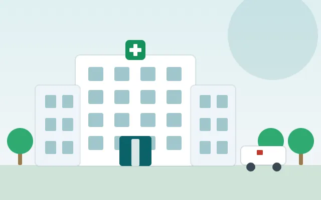

About RIIMS
Rashtriya Institute of Integrated Medical Sciences is a kidney-focused institute for ethical, doctor-led, report-based and integrated kidney care.
Kidney care built on reports, not guesswork
RIIMS is a doctor-led, report-based institute founded on a simple belief: kidney disease is rarely sudden, and the people living with it deserve honest information, calm guidance and a plan made for them. Every plan begins with your actual reports (creatinine, eGFR and your wider health picture), read alongside your history and daily life. We don’t compare one patient to another, because two people with the same creatinine can have very different causes and needs.
Our approach is integrated. We bring together the useful strengths of modern medical science and Ayurveda, working alongside your medical treatment rather than in place of it. This is the thinking behind our care backbone, the DNA Kayakalp Protocol™. It is a structured framework that combines scientific understanding, nutrition, lifestyle and Ayurveda to support kidney health responsibly.
We also believe medicine alone is not enough: diet, routine, mental well-being, family support and regular follow-up matter too. Above all we stay honest: no false promises and no shortcuts, just the right information, discipline and steady medical guidance. Kidney disease can be serious, but with the right care and a positive outlook, many people live fuller, better-quality lives.

Meet the team
Doctors & integrated care specialists
A kidney-focused team combining nephrology with safe, evidence-aware lifestyle support.